Help
qPTM (quantitative post-translational modification proteomics) is a manually curated database that collects site-resolved quantitative PTM events from published mass-spectrometry studies. qPTM 3.0 is the latest release, expanding coverage across modification types, organisms, and experimental conditions while adding richer annotation, programmatic access, and AI-assisted exploration.
The database currently covers 12 PTM types—phosphorylation, acetylation, glycosylation, methylation, SUMOylation, ubiquitylation, palmitoylation, succinylation, β-hydroxybutyrylation, crotonylation, lactylation, and malonylation—in 4 model organisms (human, mouse, rat, and yeast). In total, 15,652,063 quantification events for 994,878 sites on 49,280 proteins under 3,988 conditions are integrated from 833 curated publications.
Each event records the experimental context (sample, condition, labeling / enrichment / MS methods), quantitative values (log2 ratio and P value), and matched whole-proteome ratios when available. Conditions are annotated with five major types (cell state, pharmacological, genetic, disease, and physical) and ontology terms where possible. Site reliability is scored with a five-star system that combines raw MS re-identification FDR, recurrence across datasets, and cross-database collection.
Beyond the quantitative core, qPTM 3.0 links each site to multi-layer annotations in the result detail panel, including:
- Experiment information — Study metadata, time-course changes, re-identified FDR, and recurrence in qPTM / PhosphoSitePlus / dbPTM / PTMAtlas.
- Protein information — UniProt annotations, subcellular localization, sequence and 3D structure, sequence properties, and external database links.
- Functional regulation — Functional score, disease/variant associations, molecular and interaction effects, phase separation, and PTM cross-talk.
- Regulators and inhibitors — Modification-specific upstream enzymes and drug associations.
Users can search and browse the database through the web interface, export filtered results or request the full dataset, query records programmatically via the REST API, and explore site-level questions with the PTM Research Agent, which integrates qPTM with 37 complementary databases.
Comparison between qPTM 3.0 and qPTM 2.0
Compared with the previous release qPTM 2.0 (PMID: 36165955), qPTM 3.0 has substantially expanded the curated data as summarized below.
| Item | qPTM 2.0 | qPTM 3.0 | Increase |
|---|---|---|---|
| Literatures | 625 | 833 | 208 |
| PTM events | 11,482,553 | 15,652,063 | 4,169,510 |
| PTM sites | 660,030 | 994,878 | 334,848 |
| Proteins | 40,728 | 49,280 | 8,552 |
| Conditions | 2,708 | 3,988 | 1,280 |
Curated datasets
| PMID | Number of events | Number of unique sites | Number of unique proteins |
|---|---|---|---|
| Loading... | |||
Curated literatures
| PMID | PTMs | Sample | Condition | Label method | Enrichment method | Mass Spec |
|---|---|---|---|---|---|---|
| Loading... | ||||||
Home (Quick Search)
On the Home page of qPTM, users can specify one field or all fields to perform a quick search with keyword(s) in the selected field(s). Users can simply click the example and search buttons to perform an example search.
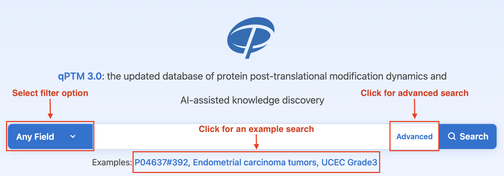
Advanced Search
Users can click the Advanced button to open the advanced search panel, add more keyword boxes, and choose AND, OR, or NOT to perform a more accurate multiple-keyword search. Users can simply click the example and search buttons to perform an example search.
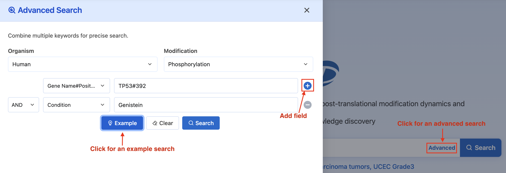
Browse
On the Browse page, users select an Organism and Modification, then choose Browse by Condition or Sample. When browsing by condition, optional Condition type and Condition ontology filters further narrow the list. Terms can also be filtered by First Letter (A–Z or #) and are paginated. Click a term tag to open the matching quantitative events on the Results page.
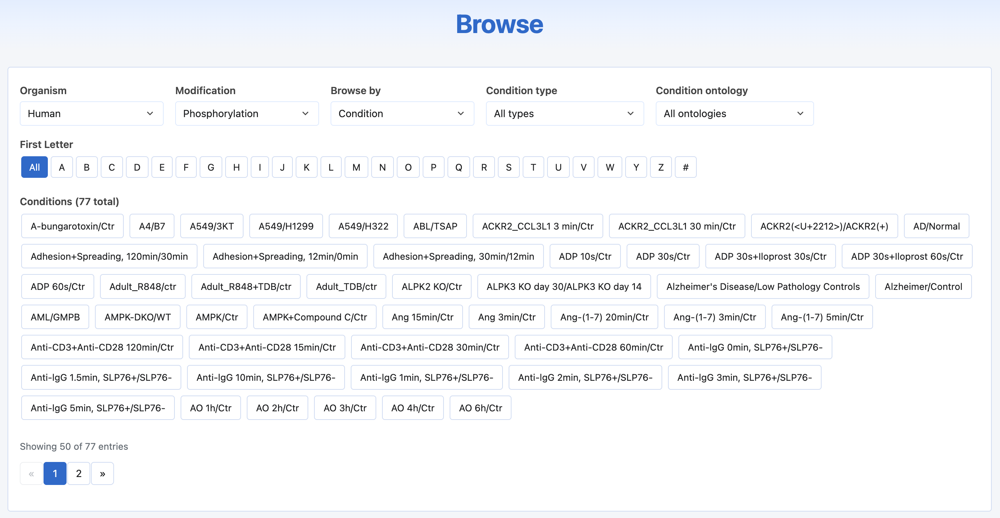
Results
On the Results page, users can view search or browse results, filter them by gene, position, modification, sample, condition, and reliability, sort any column, and download the current table. Click the button in the leftmost column to expand a detail panel for that quantitative event.
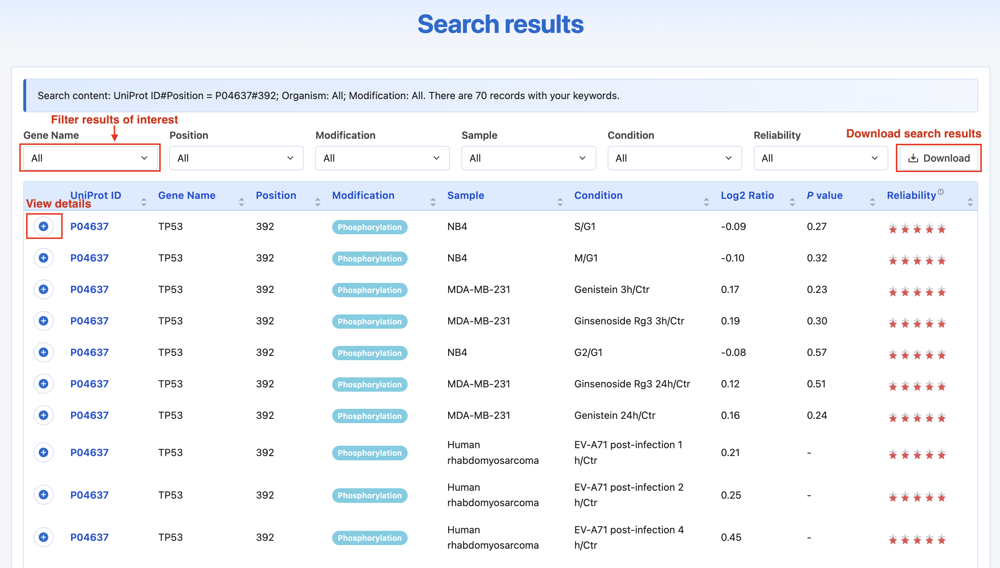
The detail panel is organized into tabs. The first three tabs are always available; a fourth regulators tab appears for phosphorylation, acetylation, methylation, or ubiquitylation events (label depends on the modification type).
Experiment information
This tab presents the experimental context of the selected quantitative event, including study provenance, condition annotation, quantification details, and cross-database recurrence.
- Resource — Title of the source study with a link to PubMed.
- Detail condition — Full contrast description, with Condition type (five major types: cell state, pharmacological, genetic, disease, and physical) and Condition ontology (ontology ID when available).
- Time course change — When available, an interactive log2 ratio chart across time points or related states.
- Related protein change — Matched protein-level log2 ratio for the same gene/condition when curated, optionally with its P value.
- Sample (type) — Sample name (linked when an external sample URL exists) and sample class (e.g. Cell, Tissue).
- Label / Enrichment / Mass spectrometer — Quantitative labeling method (e.g. SILAC), enrichment strategy (e.g. Ti:IMAC), and instrument used in the study.
- Reported PEP/Localization probability — Posterior error probability and/or site localization probability reported in the original dataset when available.
- Re-identified FDR — Site-level FDR from qPTM raw MS re-identification when raw data were reprocessed.
- Records in databases — How often the site was identified in qPTM, and whether it is also collected in PhosphoSitePlus, dbPTM, and PTMAtlas.
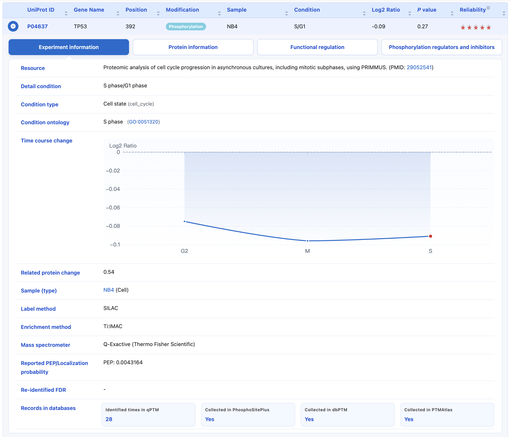
Protein information
Provides UniProt accession, protein and gene names, organism, function description, subcellular localization, PTMs collected for the protein from other resources, interactive sequence and 3D structure (PDB selector), sequence-property tracks (disorder, exposure, polarity, charge, secondary structure, surface accessibility, hydropathy; zoom and hover for site details), and grouped external database links.
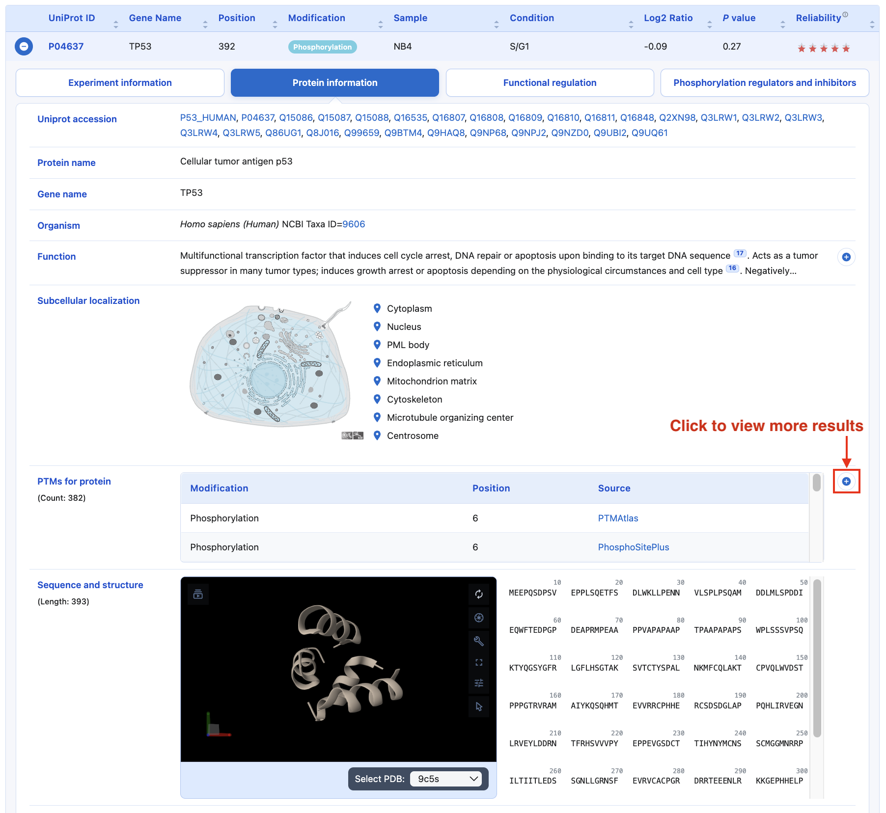
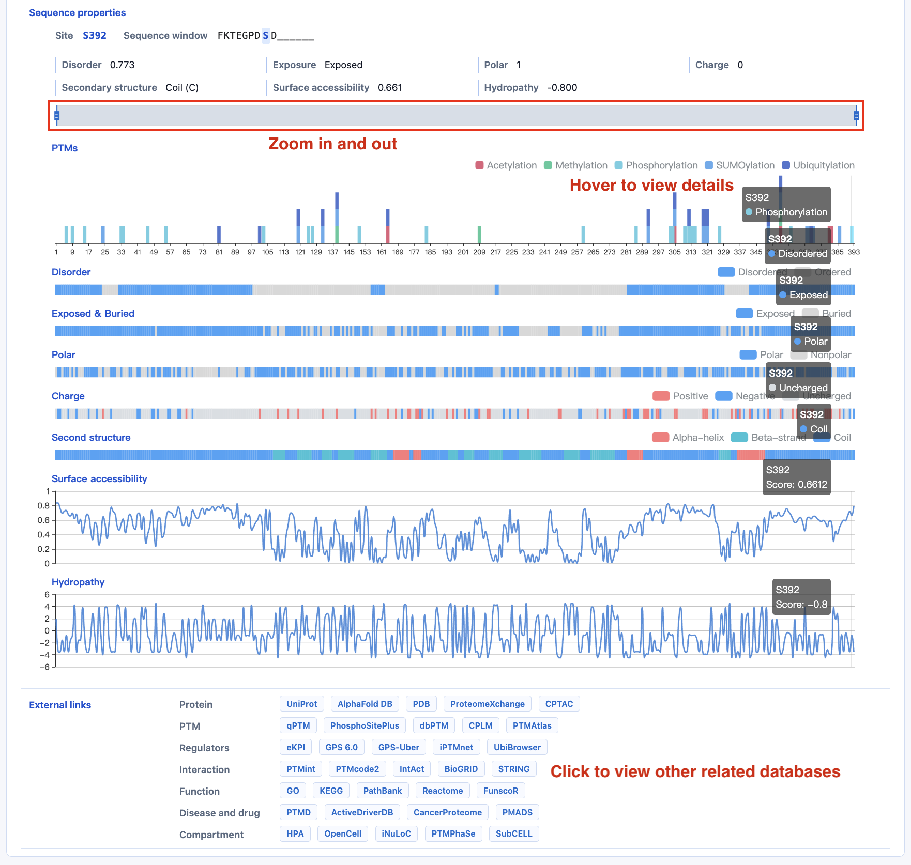
Functional regulation
This tab summarizes site-level functional annotations for the selected modification. Expandable tables show entry counts; rows link to PMIDs and source databases when available.
- Functional score — Predicted functional score for phosphosites (0–1; higher is more likely functional) from Ochoa et al..
- Disease and variants — PTM–disease associations and variant influences (e.g. creation or disruption of a site), with disease names and sources such as ActiveDriverDB / PTMD.
- Molecular effects — Literature-curated effects of the modification on protein function and biological process (e.g. activity, degradation, cell cycle), with PMIDs and sources such as PhosphoSitePlus.
- Interaction effects — Whether the PTM enhances or inhibits protein–protein interactions, listing partner proteins, related diseases, experimental methods, PMIDs, and sources such as PTMint.
- Phase separation — Regulation of liquid–liquid phase separation (LLPS), including effect (promotion/inhibition), LLPS partners, sequence regions, membrane-less organelles (MLOs), disease context, methods, and sources such as PTMPhaSe.
- Cross-talk — Functional associations between PTM sites within the same protein or between interacting proteins (site pairs, partner gene, evidence type), from sources such as PTMcode2.
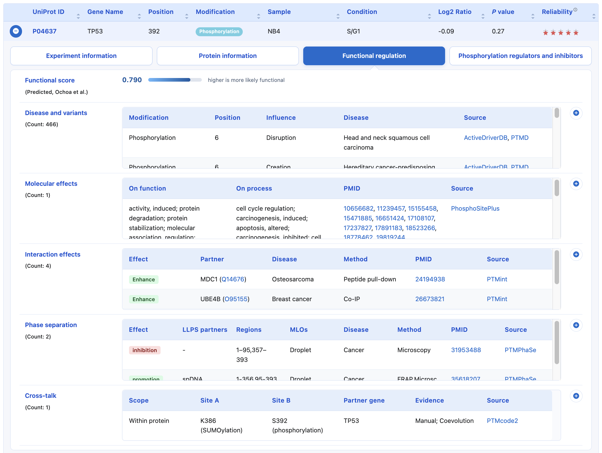
Regulators and inhibitors
A fourth tab appears for phosphorylation, acetylation, methylation, and ubiquitylation events. Content and labeling depend on the modification type; expandable tables distinguish experimental, predicted, and inferred evidence.
- Phosphorylation regulators and inhibitors — Experimental and predicted kinases with inhibitors, clinical status, PMID, and sources such as PhosphoSitePlus and DrugBank, plus inferred kinase–phosphosite correlations from eKPI (top 10 pairs with cancer cohort).
- Acetylation regulators and inhibitors — Experimental and predicted enzymes with role (writer/eraser/readers), class (e.g. HATs/HDACs), inhibitors, clinical status, and sources such as Deep-PLA, WERAM and DrugBank.
- Methylation regulators and inhibitors — Experimental and predicted enzymes with role (writer/eraser/readers), class (e.g. HATs/HDACs), inhibitors, clinical status, and sources such as WERAM and DrugBank.
- E3/DUB ligases (ubiquitylation) — Experimental E3 and DUB annotations with enzyme class, PMID, and sources such as GPS-Uber and UbiBrowser.
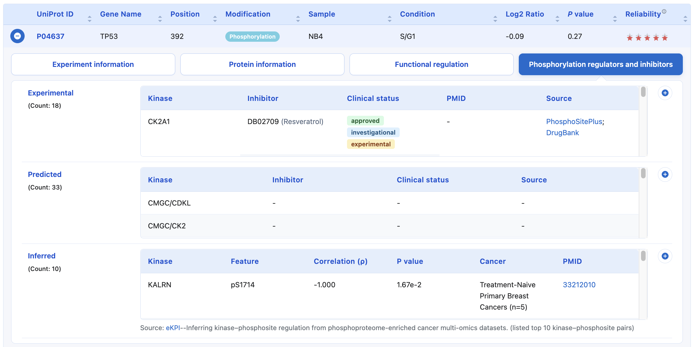
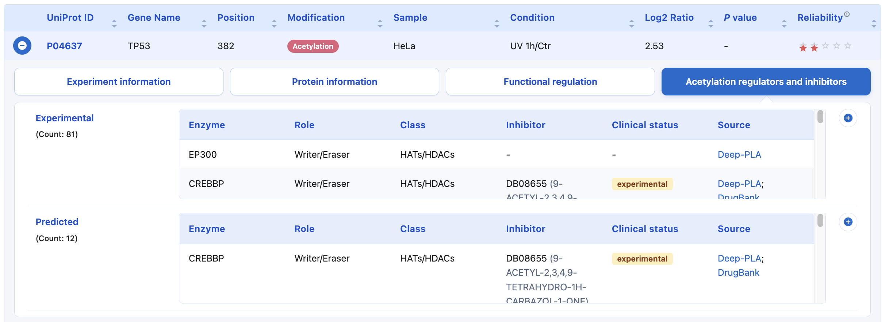
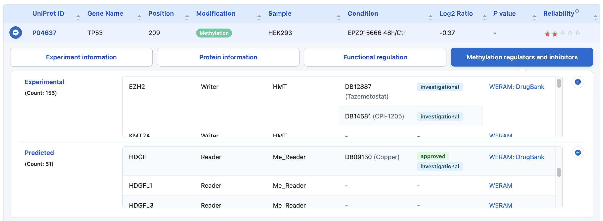
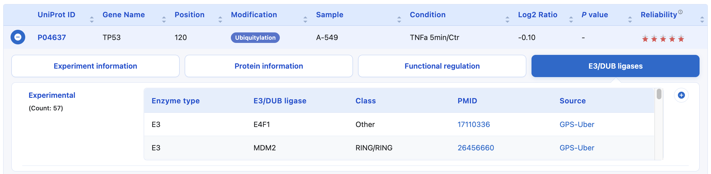
Download
qPTM provides two ways to download data. On the Results page, users can click the Download button to export the current search or browse results (including applied filters) as a tab-delimited text file. The export includes quantitative values plus Experiment information fields shown on the result detail panel (resource title, detail condition, condition type/ontology, sample type, labeling / enrichment / MS methods, related-protein change, localization probability, database cross-references, and more).
The complete qPTM dataset is also available from the Download page. Users should fill in the request form with their name, affiliation, country, and email address, complete the verification, and submit the request. A download link will be sent to the provided email address.
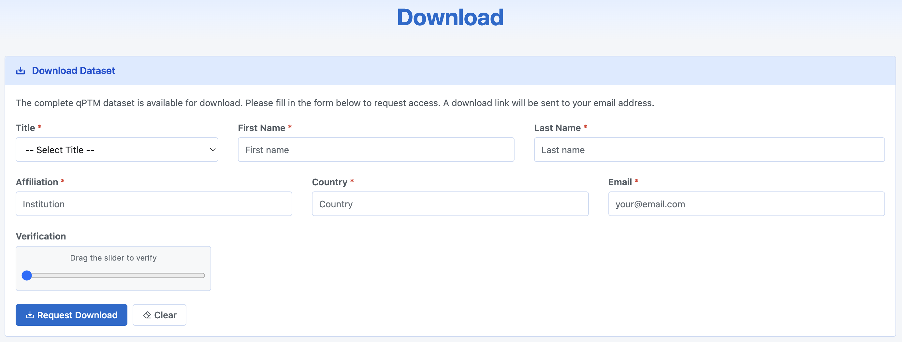
REST API
qPTM provides a free JSON REST API for programmatic access to quantitative events. No API key is required. The base URL is https://qptm3.omicsbio.info/api. Main endpoints include search events, protein summary, site events, conditions, and browse (condition / sample catalogs).
The API page documents parameters and response fields, and includes curl / Python / R examples plus an interactive Try it panel to run live requests in the browser. For bulk analysis, prefer the dataset download.
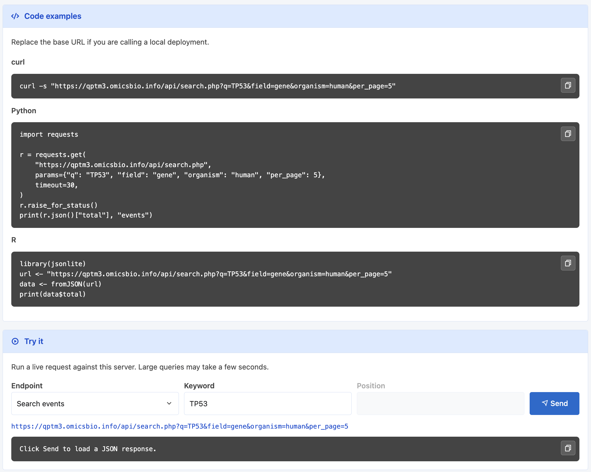
To assess the reliability of PTM sites, we developed a five-star scoring system by integrating raw MS data-based FDR control and the recurrences of identification among datasets.
We performed MS searching using MaxQuant 2.7.5.0 against the UniProt database (Release 2026_04). Default values were used for all parameters unless stated otherwise, including 1% PSM FDR and 1% site-level FDR. The identified PTMs and relevant site-level FDR were annotated to the curated data as re-identified FDR to enhance the reliability of qPTM.
For datasets without raw MS data, the reliability of PTM sites was assessed through the recurrences of identification among datasets, characterized by three major standards in the five-star scoring system as follows:
- Recurrence of the PTM site across qPTM 3.0 database. We counted the number of times each modified site was identified across all datasets. Because sites were filtered through a cutoff of site-level FDR < 1% according to the literature, the more frequently a site was identified, the more reliable it was considered. Modified sites were given zero points when identified once, one point when identified twice, and so on, with a maximum identified score of 4 for each site.
- Data reliability in the proteomics study. The posterior error probability (PEP) and localization probability of each modified site were curated from the datasets when available. PEP, the probability that an observed PSM is incorrect, was required to be under 1%, and localization probability higher than 75% was considered indicative of high-confidence sites. PTM sites meeting this criterion were given one point.
- Recurrence in other PTM databases. Modified sites collected in dbPTM, PhosphoSitePlus, or PTMAtlas were also given one point.
Taken together, the five-star scoring system assigned each PTM site a reliability score of 0–5 bright star(s) according to its recurrences of identification among datasets, and red-bordered the bright star(s) if the site had a site-level FDR < 0.01 according to raw MS data-based re-identification.
The PTM Research Agent answers natural-language questions about modification sites by querying qPTM together with 37 complementary databases spanning upstream enzymes, quantitative dynamics, subcellular and sequence context, functional and disease associations, protein interactions, pathways, and supporting literature. Evidence retrieved from each source is tagged as Experimental or Predicted and cited in agent responses.
Integrated databases (n = 37)
| Database | Description | Evidence |
|---|---|---|
| iPTMnet | Integrated PTM enzyme–substrate relationships and PTM-dependent protein–protein interactions aggregated from multiple resources and text mining. | Experimental |
| PhosphoSitePlus | Literature-based mammalian PTM annotations including kinase–substrate links, regulatory site functions, disease-associated sites, and PTM-disrupting variants (PTMVar). | Experimental |
| GPS 6.0 | Kinase-specific phosphorylation site annotations with GPS confidence scores for human substrates. | Experimental |
| GPS-Uber | Site-specific E3 ligase–substrate relationships (ssESRs) for lysine ubiquitination sites. | Experimental |
| GPS-SUMO 2.0 | Literature-backed SUMOylation sites and SUMO-interacting motifs (SIMs) from the GPS-SUMO training and test datasets. | Experimental |
| WERAM | Writers, erasers, and readers of histone acetylation and methylation across eukaryotes. | Experimental |
| UbiBrowser 2.0 | Proteome-wide E3 ligase and deubiquitinase (DUB)–substrate interactions from literature and high-confidence prediction. | Experimental |
| KAKA | Experimentally validated kinase activity–related key alterations (missense mutations classified by effect on kinase activity). | Experimental |
| eKPI | Quantitative Spearman correlations between kinase abundance (mRNA, protein, or kinase phosphosites) and substrate phosphosite levels across cancer cohorts. | Experimental |
| PMADS | Drug–PTM–disease associations across proteins, drugs, PTM types, and disease classes. | Experimental |
| DrugBank 6.0 | Drug–target associations including drug names, types, approval status, and pharmacological action at the protein level. | Experimental |
| decryptM | Dose- and time-resolved drug–PTM modulation atlas from quantitative phospho, ubiquitin, and acetyl proteomics (ProteomicsDB). | Experimental |
| qPTM | Core quantitative PTM database: site-resolved log2 fold changes, P values, experimental conditions, matched whole-proteome ratios, and integrated kinase–substrate associations across 12 PTM classes. | Experimental |
| CancerProteome | Literature-based and re-analysed MS quantification of PTM sites and whole proteomes across 21 cancer types (tumor vs. control). | Experimental |
| UniProt | Protein function descriptions, subcellular location keywords, domain architecture, and cross-references. | Experimental |
| InterPro | Integrated protein domain and family database with functional descriptions and GO terms. | Experimental |
| Pfam | Protein family and domain annotations accessed via the InterPro REST API. | Experimental |
| COMPARTMENTS | Subcellular localization integrating literature, high-throughput screens, text mining, and sequence-based predictors with confidence scores. | Experimental |
| SubCELL | Subcellular compartment-specific molecular interactions (SCSIs) and protein location annotations. | Experimental |
| iNuLoC | Determinant of nuclear localization (DNL) regions, nuclear localization probabilities, and NLS/NES motifs (via NLSdb). | Experimental |
| SignalP 6.0 | Proteome-scale predictions of secretory signal peptides (Sec/SPI) and cleavage sites for placing PTM sites in signal-peptide context. | Predicted |
| Reactome | Pathway knowledgebase reporting pathway membership and biological process context. | Experimental |
| KEGG | Kyoto Encyclopedia of Genes and Genomes pathway maps and metabolic/signaling context. | Experimental |
| PathBank | Comprehensive pathway database indexing SMPDB protein–pathway associations (metabolic, disease, drug-action, and signaling pathways). | Experimental |
| Funcscore | Machine-learning functional priority scores (0–1) for human phosphosites based on proteomic, structural, regulatory, and evolutionary features. | Predicted |
| PTM-stability | Literature-based PTM–protein stability relationships (stabilize/destabilize) covering phospho-, methyl-, acetyl-, ubiquityl-, SUMO-, and related degrons. | Experimental |
| PTMcode2 | Functional associations between PTM pairs within proteins and between interacting proteins (literature-backed subset for qPTM organisms). | Experimental |
| PTMint | Literature-based evidence that PTMs enhance or inhibit protein–protein interactions. | Experimental |
| PTMPhaSe | Literature-based PTM regulation of liquid–liquid phase separation (LLPS); includes the PhosLLPS predictor for phosphorylation-driven LLPS. | Experimental |
| dSCOPE | Literature-identified and predicted protein sequence segments critical for liquid–liquid phase separation (LLPS). | Experimental |
| dbPTM | PTM sites associated with disease via nearby non-synonymous SNPs (GWAS/dbSNP integration). | Experimental |
| PTMD 2.0 | PTM–disease associations across PTM types and diseases with directional association states (up/down, absence/presence, creation/disruption). | Experimental |
| ActiveDriverDB | Integration of PTM sites with germline/somatic mutations and site-specific kinase–target signaling network edges. | Experimental |
| STRING | Protein association networks including physical and functional interactions with confidence scores. | Experimental |
| BioGRID | Repository of protein and genetic interactions from the literature. | Experimental |
| IntAct | IMEx consortium molecular interaction database of experimentally reported interactions. | Experimental |
| PubTator3 | Biomedical literature search and entity tagging (genes, chemicals, diseases, variants) when integrated databases cannot fully answer a question. | Experimental |
This study was performed by Jiamin Hu, Jun Wu, Dong Zhang, Yijin Wu and Ze-Xian Liu.
Jiamin Hu, Jun Wu, Dong Zhang, Yijin Wu and Ze-Xian Liu are from
Sun Yat-sen University Cancer Center,
Building 2#, 651 Dongfeng East Road,
Guangzhou 510060, P. R. China
For questions or suggestions, please contact:
Dr. Ze-Xian Liu
Sun Yat-sen University Cancer Center
Email: liuzx AT sysucc.org.cn